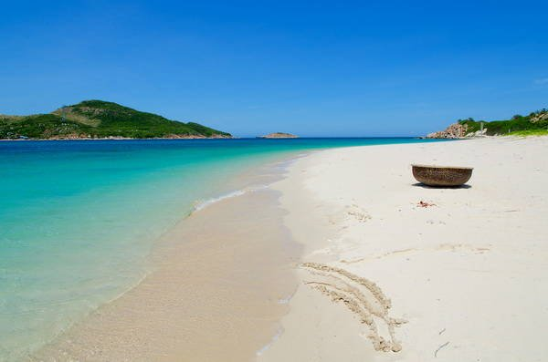

Nằm gần đảo Bình Ba là đảo Bình Hưng được dân phượt kháo nhau là một địa điểm mới cần phải khám phá. Từ bến tàu qua đảo chỉ mất 5 phút nên lúc nào cũng có tàu chạy. Bình Hưng chưa bị khai thác du lịch nên vẫn còn khá vắng.
Bãi Nước Ngọt là một bãi tắm bạn nên đến thử. Sở dĩ có tên như vậy vì ở bên trong có một dòng suối nước ngọt chảy ngang qua, bên ngoài là biển. Bình Hưng còn thu hút bởi hải đăng Hòn Chút, bãi Đá Trứng và những dịch vụ du lịch không khác Bình Ba. Ngoài ra còn có bãi Kinh cực đẹp với nước biển 3 màu, nước trong xanh thấy đáy, cát trắng mịn sẽ mê hoặc những ai đến đây.